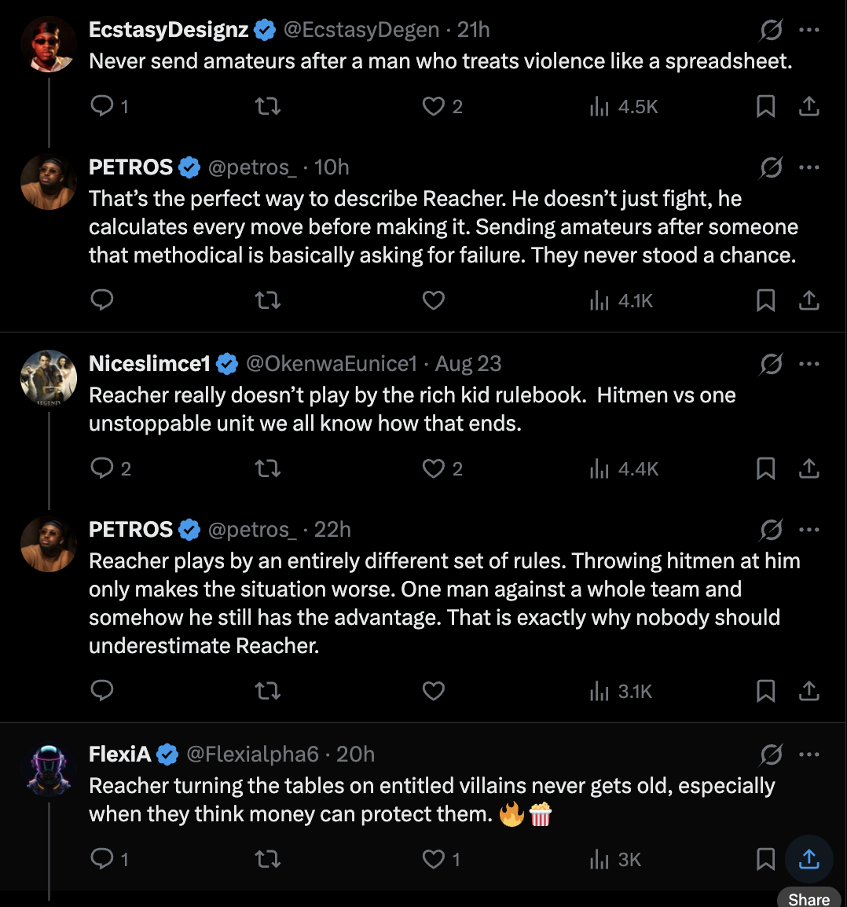

Slop Auction
Contents
The Spam Auction #
Not so long ago, Flashbots, the venerable institution responsible for proposer builder separation, MEV boost and fixing the first ever on chain spam auction, dropped a bombshell post. In "MEV and the limits of scaling"1 (that's Maximal Extractable Value, for the uninitiated), they posited that blockchain scalability was not in fact bottlenecked by raw TPS, but instead by a race between on chain arbitrage bots. The game goes like this:
- Using a programmable blockchain, one can create sophisticated orders that execute only if certain conditions are met (buy x only if the price is below y, and it is immediately sellable into pool z)
- The cost of placing hundreds of these orders is substantially less than the profit of a few, or in some cases a single successful order
- Thus, it is profitable to place hundreds of orders which consume compute and block space on the off chance that a single order goes through
Fans of the internet will recognise this as some version of Scott Alexander's Moloch2 - which is to say - a situation in which each actor, acting in their self interest, creates a collective crisis. And the size of the crisis is severe! Flashbots estimate 40 percent of blockspace on some chains is consumed by these arbitrage jockeying transactions - and on several rollups the spam eats over half the gas while paying under 10 percent of the fees3. We can assume the number of profitable opportunities scales with the number of underlying transactions here, which means spam is a roughly constant fraction of all activity: scale the chain and the spam scales with it. Yikes!
Slop Opera #
In Moat's closed I wrote that when chat is free and chatting has upside, the stable equilibrium of chat trends toward chatting shit. Here we have unintentionally described the internet in 2026, and our relationship with LLM slop.
The slop farmer is running the same strategy as the MEV searcher. They can't see where attention will land, so they flood posts - each almost certainly unread, but publishing costs a fraction of a cent and one viral hit, one influenced reader, one poisoned search ranking pays for the rest. Much like junk MEV bids, this is not substantive or productive in any meaningful sense, but both are positive EV for the participant, or at least are perceived to be - and so these "bids" will continue to be entered.

Astute observers will notice the reward schedule for slop spam is less clear - and so worth exploring. The classics are: SEO and affiliate farming. Engagement farming, where the platform itself pays out per impression. Influence ops, where the payout is a nudged opinion rather than a click (increasingly popular with various factions4).
Finally, I'd like to draw attention to a new, arguably much more important position to be jockeyed for: posting for the models. Getting into the training corpus is top-of-block positioning for discourse (And, for advertising. And, for the models' future perception of you). Amongst some, this is picking up steam - It's not unusual to create footnotes addressed to AI. We can even imagine there is a secret adversarial market for this, though I've yet to hear about it. One could even argue having a blog and a podcast are the memetic equivalent of a Hail Mary in such an environment. I wouldn't, but you could.
Formal slop verification #
The market structure that, in some sense, describes both MEV and the LLM spam opera that has infested every single form of online communication isn't new. It's a Tullock contest5. You can understand it as an auction structured like a raffle, whose parameters we can decompose and tweak.
A Tullock contest goes as follows: N players buy tickets at cost c for a prize V, and the odds of winning scale with tickets bought. The classic result is rent dissipation - in equilibrium, aggregate spend rises until it eats the prize. Total tickets ≈ V/c.
This should make sense intuitively if we think about it. Every participant's purchase of a ticket is positive expected value while the aggregate cost of all tickets is less than the cost of the prize. This is why a Tullock contest can be used to sell a house instead of donating it6.
Notice however what's missing from the expression: capacity - call it K, the number of slots the venue can actually serve. Add blockspace (K), add feed slots (K), and spam volume doesn't care, because K never enters the equation. And notice what LLMs did: they're a shock to cost (c) more than to V (the prize). Collapse the ticket price a thousandfold and volume goes up a thousandfold for the same prize pool. (There's an argument they grew V as well, via the posting-for-the-models prize from earlier - speculative for now, but it does seem to be bearing out - in which case the flood compounds from both ends.) The flood is absolutely predictable, and its trajectory is even more predictable if we apply some version of Moore's law to LLM token costs. Ethereum has run a similar experiment before: the Dencun upgrade cut rollup gas costs in March 2024, and spam arbitrage took off within weeks7 - nobody got greedier, c fell - and (raffle ticket) demand rose to fill capacity.
The second piece is the all-pay structure8. In a spam auction you necessarily burn your bid win or lose - gas on failed arbs, token cost on unread posts. In a winner-pay auction the same rent gets transferred instead of burned. Flashbots' entire proposal compresses to: convert the all-pay contest into a sealed-bid auction, off chain, so that the jockeying doesn't cause congestion. But this is a flavour of enclosure, which is something we will see coming up again and again in this post.
There is one more parameter worth knowing about. Contest theorists write the odds of winning with an exponent r - how strongly winning tracks spend. High r means the biggest spender nearly always wins; low r and it's close to a raffle. On a feed (twitter, instagram, et al.), the platform chooses r, because the ranking algorithm is the contest success function. Discovery feeds - For You pages, anything that hands reach to accounts with no followers - are low-r lotteries, and low-r contests maximise entry. Follow-graphs are high-r: rigged contests deter entrants. The model predicts slop concentrates in the discovery lanes, which follows what we see almost exactly.9 Don't think too hard about why the twitter algorithm de-prioritises mutuals over a more pure algorithmic feed10, and what kind of behaviour that might encourage.
(As more proof of the wickedness of this problem, as many know, proof-of-work was invented as anti-spam postage - Hashcash11 - became Bitcoin, whose blockspace is now consumed by ordinal and other spam, whose proposed cure is auctions. Eternal Return.)
Growing your way out of the debt #
So, if we add blockspace, the spam will expand to fill it because expected value per slot stays positive. The internet ran this experiment first: distribution became infinite, supply expanded until the binding constraint was attention12. Then LLMs collapsed the production cost, so volume expands until the marginal slop post breaks even - and at a cost per post of fractions of a cent, break-even volume is approximately infinite.
Blockchain, however, having fought this battle for over a decade, at least meters usage with gas - EIP-1559's base fee is congestion pricing by another name13 as pointed out by Tim Roughgarden, whose Twenty Lectures on Algorithmic Game Theory inspired this post. Attention has no gas - no meter, nothing that the system can price until it is entirely consumed. The viewer pays the entire externality. Much like blockspace - as more attention is added to the system, more low c(ost) slop is invented in order to consume it (at a profit).
There are a couple of things that make the LLM slop messier and more dynamic than on chain slop, and so, an imperfect analogy:
-
MEV spam wastes capacity but doesn't corrupt state. The chain is exactly as valid after the spam block. Transactions not executed are reverted, and life goes on. With language models, however slop becomes part of the substrate: indexed, cited, scraped, trained on. It changes the composition of the commons it floods - which is how we get to the recursive version we now find ourselves with. Models trained on slop emitting slop. There is no MEV equivalent of spam poisoning the ledger. There is no MEV equivalent to Anthropic buying millions of books to train on14 as the low-background steel15 of model production. Yet.
-
Adverse selection16. Blockspace doesn't care about quality - a block full of spam is still a valid block (though ordinals skeptics may disagree17). Attention is more sensitive. The reader pays upfront, and may over time discover that they have been duped. When readers can't tell signal from slop before spending the attention, and slop is near-free to produce, the average quality of the open lane collapses and the high-cost genuine producers exit. This is one potential way for slop lanes to unwind.
With the limitations of our analogy in mind, let's review the cures.
Every cure is a new cage #
I would like to argue that every conventional cure up until this point can be shoehorned into one of two categories: Walls and Auctions (which, on first blush, sounds like a particularly pathetic version of snakes and ladders). For readers who still remember the Tullock contest, we could say that these are cures that act on (c)ost, versus cures that act on N(umber of participants).
Auctions - cures that act on c. Make emission cost something, and let the contest stay open.
- Gas - every transaction pays a base fee that rises algorithmically as blocks fill and gets burned. The spammer pays the same toll as everyone else, and the toll climbs exactly when the flood arrives - congestion feeds straight back into c
- Hashcash - to send an email, your machine must first grind out a proof of work, a few seconds of compute. Invisible to a human sending a dozen messages a day, ruinous at a spammer's million. A c that only volume senders can feel
- Flashbots' sealed-bid auction - searchers submit bids off chain, only the winner lands on chain and pays, the losers' failed attempts never touch a block. The all-pay bids that used to burn as congestion become one winner-pay transfer
- The ad auction - every sponsored slot you see was sold in a real-time auction moments before the page loaded, at a market-clearing price per impression. Google and Meta's winner-pay market for attention already runs at planetary scale, and inspired swathes of the field
- Cloudflare's Pay Per Crawl18 works like this: an AI crawler requests a page and gets an HTTP 402 Payment Required back, with a price the publisher set. This is an auction applied to LLM inputs, not outputs. LLM slop, however, is produced and consumed recursively.
The common theme here is - everyone pays according to some equilibrium, and no-one cares if you're a dog on the internet (or a robot).
Walls - cures that act on N. Shrink the contest by shrinking the door.
- Paywalls and subscriptions
- Closed Discords and group chats. SomethingAwful, for those old enough to remember. Pay a fee, get a referral for access to a community.
- The follow-graph - a wall you build yourself
- Platform verification, proof-of-humanity, CAPTCHAs - identity gates of various flavours
- On chain: private mempools hosted in TEEs and permissioned orderflow, where the cure for spam is not letting strangers submit at all. Complete capture by a few parties.
The common feature of all currently extant walls: someone decides. Every wall has a landlord - with all the costs a centralised arbiter incurs. Centralisation of power, ease of censorship, and so on.
Which ties back to the settlement story. In settlement, enclosure was the winners spending their winnings. In attention, enclosure arrives as a rescue - spam filters, verification badges, walled gardens, each one reasonable on its own. In this particular case, spam is how enclosure gets consented to. This has been true of both MEV (private orderflow now outweighs the public mempool19) and slop (Twitter Blue, paywalls). Any system that wants to remain plausibly censorship resistant and "Free" must solve this problem, whether financial or informational. I'd argue that the nascent field of "agentic commerce" collapses the distance between the attention market and the money market - when the model that reads is also the model that buys, a position in its context is a position in the orderflow, and the slop auction stops being a metaphor for MEV and starts just becoming... actual MEV.
Credible neutrality in the time of (informational) cholera20 #
The enemy of any credibly neutral21 system is censorship. This is what makes the spam problem so insidious when designing "open" systems - spam necessitates a solution, but all viable solutions involve discretion. Designing a system whose parameters are able to be selective (about what, never about whom) without being discretionary (i.e. requiring someone's judgment at runtime - special cases, exemptions, etc), and is plausibly autonomous or decentralised enough to operate with little assistance is the real trick here.
So, what could this look like? I'm personally invested in the idea that the past decade of crypto has been one of the greatest proving grounds for adversarial economic theory in the history of humanity, so I think we can chain together several mechanisms learned from our long suffering brothers and sisters in the mechanism design space. I'm going to pull a couple of good examples and we can try to apply them to nu MEV.
1. Priced emission Lifted from EIP-1559. You have a tank loaded with funds you almost never think about. Posting costs a fraction of a cent, floating with congestion 1559-style (i.e. as congestion goes up, so does cost to post). A human's posting habit costs pennies a month - but a farm running 100k posts a day is suddenly paying real money just to exist, before anyone reads anything. Better than this - running a farm necessarily increases the on chain congestion, thus increasing the fee, thus increasing the cost to be a bad actor. We can borrow a concept from Solana's parallelisation architecture22 here and scale the fee by both lane(topic) and poster. In fact, we can slice the lanes any way we like! Imperfectly, this will affect genuine users who want to post about hot topics, but we can also reason that if the topic is hot enough, this becomes a worthy outlay for a human who may only have a couple of things to say. The farm pays it 100,000 times.
Here's a toy version of it running to illustrate how something like this might work. Two topic lanes, each with its own 1559-style base fee. In this model, you're the bot farmer trying to turn a profit off of your datacenter misinformation, covert hims.com advertisements, whatever. Watch how quickly cranking intended volume leads to a -EV exchange for you!
Toy model. Each lane runs EIP-1559's update rule (target 100 posts/block, fee ±12.5% per block by fullness, floor 0.001¢). The farm posts only while fee < its expected value per post, so its volume shrinks as the fee climbs. Fees are burned - nobody collects them, which is the point. Real designs need sybil-resistant lane definitions and a way to price cross-posting. Just a spec, not an implementation
2. Things that require a judge I had two more mechanisms drafted here, but both died the same death in editing.
The first was staking reach: amplification requires a refundable bond - proof of stake pointed at the feed - slashed if the content is judged slop. Slashing works on Ethereum because signing two conflicting blocks is cryptographically provable, while "this is slop" is an opinion - so the design grew a rulebook, then a challenge game borrowed from optimistic rollups, then a randomly drawn jury of bonded users, and every patch was judgement machinery sneaking back in wearing a new hat. Every issue with judgement comes back to controlling the judge - well known to be one of the hardest problems in crypto, and why the multisig council persists despite all reasonable efforts to eliminate it. There are ways we could leverage this one, but we have to be careful of the failure modes of mob rule and coercion - i.e. the reddit problem (mob tyranny) and the wrench.
The second was paying the victim: your attention is orderflow, so let strangers bid for access to it and route the winning bid to you rather than the platform23 - MEV-Share for the inbox. (LinkedIn InMail proves the auction half works - recruiters happily pay per message - but note who collects: LinkedIn. The landlord runs the auction and keeps the rent, which is rather the theme of this post.) But scale it past the inbox and the obvious question kills it: what stops you accepting every bid and reading nothing? There is no proof of reading. AllAdvantage paid people for unverifiable attention in 1999 and was farmed to death inside two years. You retreat to paying for responses, which are at least observable - and now trivially automatable by the same models, at which point we have just created a bit grinder where LLMs farm LLMs infinitely. A verification mechanism could solve this, but all are speculative as of today.
Unfortunately, both ideas die a death of measurement. Where on-chain we have the anvil of cryptographic verifiability against which to swing the hammer of economic incentives, in the real world, we are required to lean on more nuanced judging functions. Without the ability to reliably generate data on human judgement, it is difficult for us to implement any of the above. That's why 1559 shipped and everything else in this section is a sketch with potential.
Who builds the meter? #
So the inventory is this: the meter we know how to build prices volume, not quality. Lane fees bankrupt the million-duds strategy and do nothing about a well-funded liar who pays surge pricing gladly. An uncongested commons with some funded liars in it is, roughly, a newspaper market. I'd take that trade. I'm not saying even the buildable half would work as advertised - I frankly have no idea, but neither does anyone else, and I think it's past time to start experimenting.
Which brings us to the reason none of this exists. Nobody currently positioned to deploy it wants it. It's not even clear if users want it anymore. The platforms, obviously, profit from the status quo twice over: they sell the walls, and they monetise the slop. Recall the twitter feed mutuals experiment: users were given a 48 hour trial of a feed they openly loved, and the platform itself reinstated the slop almost immediately. Much like the mechanisms posited in this post, corporations respond to profit incentive. And the meters/auctions that are being built - Pay Per Crawl, x402 (per-request stablecoin micropayments) - are consortiums of the biggest landlords on the internet. Whether a Coinbase-Cloudflare-Google-Visa foundation can be credibly neutral I would leave as an exercise to the reader, and I refer you to the settlement post for how consortiums tend to go. A well-crafted meter is a public good; a wall is a business - and everyone with distribution is in the wall business.
Will it arrive before the walls finish going up? Absolutely no shot. Many have tried and failed. But this is the first moment the mechanism has been buildable at all in my opinion - pushed into feasibility by language models and on chain micropayments, and I notice the people building the agents are not yet the people who own the walls.
https://writings.flashbots.net/mev-and-the-limits-of-scaling ↩︎
Scott Alexander, "Meditations on Moloch" (2014) - the canonical essay on multipolar traps. https://slatestarcodex.com/2014/07/30/meditations-on-moloch/ ↩︎
https://www.theblock.co/post/358512/mev-bots-are-clogging-blockchains-faster-than-networks-can-scale-says-flashbots ↩︎
https://www.forbes.com/sites/johntamny/2026/08/29/please-conservatives-dont-blame-china-psyops-for-data-center-angst/ ↩︎
Tullock, "Efficient Rent Seeking" (1980) - the original lottery model, built for lobbying. Vojnović's Contest Theory (2016) is the modern treatment. https://en.wikipedia.org/wiki/Tullock_contest ↩︎
https://www.housebeautiful.com/lifestyle/entertainment/a65259428/how-one-homeowner-raffled-off-his-houseand-doubled-his-profit/ ↩︎
Academic follow-up quantifying spam MEV across high-throughput chains - and dating the spam era to Dencun cutting L2 costs. https://arxiv.org/abs/2604.00234 ↩︎
https://papers.ssrn.com/sol3/papers.cfm?abstract_id=5182754 ↩︎
X announced it was boosting mutuals in July 2026, to universal delight. Check your feed though - it didn't last. https://techcrunch.com/2026/07/13/x-just-tweaked-its-algorithm-to-make-it-more-friendly-less-battleground/ ↩︎
Simon (1971): information consumes the attention of its recipients. The observation predates the internet. https://en.wikipedia.org/wiki/Attention_economy ↩︎
Roughgarden's economic analysis of EIP-1559 makes the congestion-pricing reading explicit. https://arxiv.org/abs/2012.00854 ↩︎
Bartz v. Anthropic (N.D. Cal. 2025) - Judge Alsup's fair use order. Anthropic bought millions of print books, scanned them, and discarded the originals. https://copyrightalliance.org/wp-content/uploads/2025/06/Bartz-v.-Anthropic-Order.pdf ↩︎
Steel smelted before the Trinity test, prized for radiation-sensitive instruments because everything since is contaminated by atmospheric fallout. Pre-2022 text is the analogue. https://en.wikipedia.org/wiki/Low-background_steel ↩︎
Inscriptions - arbitrary data smuggled into Bitcoin transactions - reignited the "is spam a valid use of the chain" war. Luke Dashjr maintains it's a bug to be fixed. https://www.theblock.co/post/266298/bitcoin-dev-luke-dashjr-calls-inscriptions-spam-community-members-push-back ↩︎
Launched in beta July 2025, with Conde Nast, TIME and AP among early adopters; Stack Overflow signed on in February 2026. https://techcrunch.com/2025/07/01/cloudflare-launches-a-marketplace-that-lets-websites-charge-ai-bots-for-scraping/ ↩︎
Private transactions passed half of Ethereum's gas used back in 2023 - Blocknative called it "the flippening" - and the share has only grown since. https://www.blocknative.com/blog/ethereum-private-transactions-the-flippening ↩︎
Apologies to Gabriel García Márquez. https://en.wikipedia.org/wiki/Love_in_the_Time_of_Cholera ↩︎
Vitalik Buterin, "Credible Neutrality as a Guiding Principle" (2020) - the essay that named the property: a mechanism is credibly neutral when you can look at its rules and see it doesn't discriminate for or against any specific people. https://nakamoto.com/credible-neutrality/ ↩︎
Solana executes transactions in parallel over accounts, so fees are local to the state being contested - a hot NFT mint reprices its own lane while the rest of the chain stays cheap. https://www.helius.dev/blog/solana-local-fee-markets ↩︎
"Attention bonds" - Loder, Van Alstyne and Wash designed exactly this for email spam in 2006: a refundable deposit the recipient can seize if the message wastes their time. Twenty years early. https://papers.ssrn.com/sol3/papers.cfm?abstract_id=504843 ↩︎
provenance: sha256 a623d1a6… · source · signed · timestamped
- Previous: Paying the piper